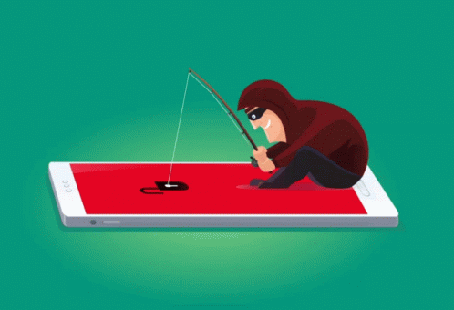

Malware
Última atualização: Outubro 1, 2023
O phishing é uma forma comum de ataque cibernético que os criminosos usam para enganar as pessoas e obter informações confidenciais, como senhas, números de cartão de crédito e informações pessoais. Nesse tipo de golpe, os hackers geralmente enviam e-mails ou mensagens falsas que parecem ser de fontes confiáveis, como bancos, empresas ou até mesmo amigos. Essas mensagens frequentemente solicitam que a vítima clique em links maliciosos ou forneça informações sensíveis. Para se proteger contra ataques de phishing, é essencial adotar boas práticas de segurança cibernética.
Em primeiro lugar, é importante sempre verificar a autenticidade de e-mails e mensagens, especialmente se eles solicitarem informações pessoais ou financeiras. Verifique o endereço de e-mail do remetente, os erros de ortografia e a gramática do texto. Lembre-se de que organizações legítimas raramente solicitam informações confidenciais por e-mail.
Além disso, nunca clique em links ou baixe anexos de e-mails suspeitos. Em vez disso, digite manualmente o endereço do site da organização ou entre em contato diretamente com eles por telefone para verificar a solicitação.
É crucial manter seu software de segurança atualizado. Utilize programas antivírus e antimalware de qualidade e mantenha-os sempre atualizados para detectar e bloquear ameaças de phishing.
Outra medida eficaz é habilitar a autenticação em dois fatores (2FA) sempre que possível. Isso adiciona uma camada extra de segurança, mesmo que um atacante obtenha sua senha.
Educação e conscientização são igualmente importantes. Treine você e sua equipe para identificar sinais de phishing e como agir quando encontrarem um e-mail ou mensagem suspeita. Conhecer os tipos comuns de ataques de phishing pode ajudar a evitar cair em armadilhas.
Por fim, denuncie qualquer tentativa de phishing às autoridades competentes e à empresa ou organização que o atacante está tentando imitar. Isso pode ajudar a prevenir futuros ataques e proteger outras pessoas.
Em resumo, o phishing é uma ameaça persistente, mas com vigilância, educação e práticas de segurança adequadas, você pode se proteger contra esse tipo de ataque e manter suas informações pessoais e financeiras em segurança.